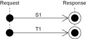
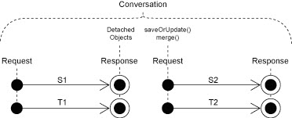
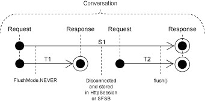
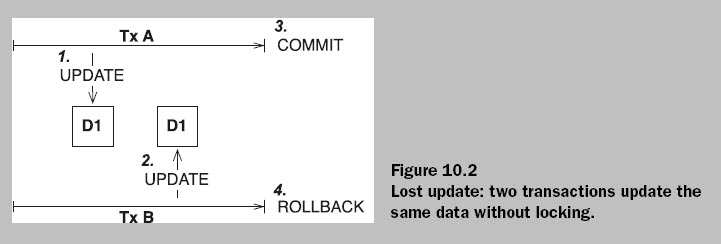
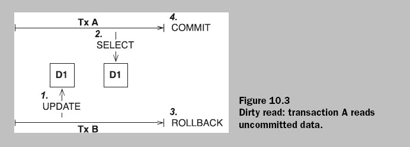
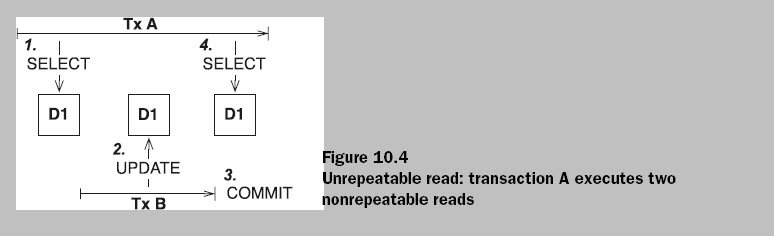
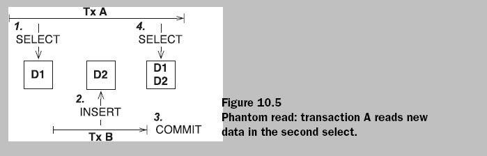

NOTE:Hibernate-2009
2007-6-12
1.使用Session执行一个事务的标准代码:
Session session;
try{
session=factory.openSession();
Transaction tx=session.beginTransaction();
//执行事务
…
//提交事务
tx.commit();
}
catch(Exception e)//如果出现异常,则事务回滚
{
if(tx!=null) tx.rollback();
throw e;
}
finally
{
//不管事务执行成功与否,最后都关闭session
session.close();
}
2007-6-13
2.java是根据地址来区分同一类的不同对象 Hibernate通过OID(对象标识符)来确定一个对象和表中一条记录的对应关系.
3.sessionFactory.getCurrentSession()是干什么的呢？首先，只要你持有SessionFactory（幸亏我们有HibernateUtil，可以随时获得），大可在任何时候、任何地点调用这个方法。getCurrentSession()方法总会返回“当前的”工作单元。记得我们在hibernate.cfg.xml中把这一配置选项调整为"thread"了吗？因此，当前工作单元的范围就是当前执行我们应用程序的Java线程。但是，这并非总是正确的。 Session在第一次被使用的时候,或者第一次调用getCurrentSession()的时候,其生命周期就开始。然后它被Hibernate绑定到当前线程。当事务结束的时候，不管是提交还是回滚，Hibernate也会把Session从当前线程剥离，并且关闭它。假若你再次调用getCurrentSession()，你会得到一个新的Session，并且开始一个新的工作单元。这种线程绑定(thread-bound)的编程模型（model）是使用Hibernate的最广泛的方式。
4.关于一对多映射和多对一映射
映射改善了类型结构,大大方便了我们的编程.具体参看THib工程.
6.关于inverse属性和cascade属性
这两个属性都在进行一对多,多对一映射时对操作的关联性进行设置和限定时用的.
一旦对象之间产生了关联关系,那么必然会面临像一方依赖于另一方的某一属性被
更改或删除时,前者将如何应对之类的依赖性操作问题.inverse和cascade虽各有其用
但他们被设计出来就是针对这个问题的.从这一点出发可以更好的理解他们的功用.
应该说inverse关注的是在one-to-many映射(或many-to-one)中从one方修改它所对应的many方数据
是否有效,而cascade关注的是在one-to-many(或many-to-one)映射中one方被删除或更改后,众多依赖于
它的many方如何应对.
2007-6-14
1.关于对象持久化和session缓存.
有些书上这样描述持久化对象:它们是被存放于一个特定缓存中的对象,这个缓存的"威力"在于它"似乎"可以持久地(这里的持久
是相对应用程序中对象的生命周期而言的)保存应用程序中的对象(注意:这种保存也是指保存在内存里).
事实上,上面的描述中提及的缓存就是session缓存.而且这种所谓的缓存也只是一种逻辑上的概念,并不说内存中真得会开辟一
块特殊区域来存放我们的持久化对象.
那么持久化对象之所以能够"持久"的真正原因在哪里呢?问题的关键就是这个session缓存.我们知道:在java中,一个对象的生命周期
取决于是否还有至少一个引用来指向该对象,当没有任何引用指向该对象时,这个对象就被视为"垃圾"而在某次垃圾回收过程中被清除了.
那么,如果我们想要在内存中持久保存一个对象,只需要保证至少有一个引用总是指向该对象的.而session缓存正是基于这样一种思路创建的
session缓存的实质其实是一组java类集.这些类集专门用于保存一个对象的引用.我们说一个对象被持久化,其实质就是它的一个引用被
加入到了session中专门存放持久化对象引用的集合中.一旦加入这个集合,就意味着这个对象的生命周期将完全取决于session对持久化对象
的操作.而不再受应用程序中对象生命周期的约束,这样,持久化工作完成,我们就说这个对象已被持久化了!
2.对于OID的建议
Hibernate能过持久化对象的OID来维持它和数据库中相关记录的对应关系,当一个对象处于持久化状态时,是严禁修改它的OID的.
事实上,这不管一个对象处于临时,持久化,还是游历状态,程序员都不应该修改它的OID,最好的做法是不把setId()方法设为private!
2007-6-18
映射组成关系
1.什么是组成关系:一个类(我们称之为整体类)可能会由多个类(我们称之为部分类)来组成,这时,我们说整体类和部分类
之间就是一种聚集关系.这种聚焦关系还可以细分为两种不同的情况:一种是:整体类的所有对象共享部分类的一个对象,
而另外一种情况就是:每个整体类的对象都拥有一个属于自己的部分类对象,也就是说一个部分类的对象只能属于一个整体
类对象.我们把这种聚集关系称之为:组合关系.
2.建立域模型和关系数据模型有着不同的出发点.域模型是由程序代码组成的,能过细化持久类的粒度来提高代码的可重用性.
关系数据模型是由关系数据组成的.在存在数据冗余的情况下,需要把粗粒度的表拆分成具有外键参照关系的几个细粒度的表,
从而节省存储空间;另一方面,在没有数据冗余的前提下,应该尽可能减少表的数目,简化表之间的参照关系,以便提高访问数据
库的速度.因此,在建立关系数据库时,需要进行节省数据存储空间和节省数据操作时间的折中.
3.个人理解的组成关系映射:在数据库的设计中,我们应该在保证无数据冗余的前提下尽可能的提高表的粗粒度(也是说是:能写在
一个表里的字段一定不要写在两张表里),目的是为了在对数据进行操作是,减少跨表的连接操作,因为这样做的代价很高.但是
我们在编写代码时,却需要精化模型力度以便提高代码的复用性.说白了,就是比如一个员工表中会列出其联系信息:比如住处,电话
邮编,邮箱等,做数据的设计中它不应该被设计成一个单独的address表,因为一方面把它们写入员工表,并不会导致数据冗余,而另
一方面,把它们写成一张单独的表,导致连接查询,影响系统效率.但是从面向对象的设计角度出发,把这些数据封装到一个类中
是一种很好的做法,于是矛盾出现了,解决这一矛盾的方法就是使用:组成关系映射.
2007-7-3
一个ORM产品应该提供哪些服务呢?换句话说:提供了什么样的服务才能算是一个ORM产品呢?以下是来自spring in action的总结:
■ Lazy loading—As our object graphs become more complex, we sometimes
don’t want to fetch entire relationships immediately. To use a typical example,
suppose we are selecting a collection of PurchaseOrder objects, and
each of these objects contains a collection of LineItem objects. If we are
only interested in PurchaseOrder attributes, it makes no sense to grab the
LineItem data. This could be quite expensive. Lazy loading allows us to
grab data only as it is needed.
■ Eager fetching—This is the opposite of lazy loading. Eager fetching
allows you to grab an entire object graph in one query. So if we know we
need a PurchaseOrder object and its associated LineItems, eager fetching
lets us get this from the database in one operation, saving us from
costly round-trips.
■ Caching—For data that is read-mostly (used often but changed infrequently),
we don’t want to fetch this from the database every time it is used.
Caching can add a significant performance boost.
■ Cascading—Sometimes changes to a database table should result in
changes to other tables as well. Going back to our purchase order example,
it is reasonable that a LineItem object has an association with a Product
object. In the database, this is most likely represented as a many-to-many
relationship. So when a LineItem object is deleted, we also want to disassociate
this LineItem from its Product object in the database.
2008-3-20
You can now use an HQL query such as from IAuditable to retrieve all persistent
instances of classes that implement the auction.model.Auditable interface.
此方法可以说是为应对基于抽象编程而设计的。经过import设置后，在ＨＱＬ中就可以使用接口而不是
具体类（Auditable）了。
2008-3-21
Hibernate对于类体系的映射策略：
１.一个具体类对应一个表：使用
优点：比较直观
缺点：书写ＳＱＬ会很复杂，而且各表单独持有主键，如何有其他表参照这些表，会有参照完整性问题。
适用情景：如果在model中没有类关联这个类体系（不存在外键参照），则可以考虑使用使方案。
２.类体系中所有的类不管是抽象类还是具体类都映射到一个表上。使用
优点：高效，ＳＱＬ简单
缺点：如果有个别列有非空约束，而不能使用此方案。若无此约束，这是最好的映射方案！
３.一个类对应一个表（包括抽象类）。使用
优点：不会破坏参照完全性，不妨碍各表制定自身的约束
一般说来，我们倾向于首先方案２，备先方案３.
缺点：需表连接，性能上有问题！
关于
而
仔细区分！
一般来说，一个实体的值对象多会同他的实体一起放在表中的同一行，但是如果一个实体有多个同种的值对象时，这个时候，值对象就不能存放在实体表中了！这个时候值对象集合要放在单独的一个表中，一般我称这样的表为集合表！注意，集合表不代表一个实体集合，而是一个值对象集合！这一点很重要！
2008-3-23
<class
name=“Item”
table=“ITEM”>
…
If you compare this with the collection mappings earlier in this chapter, you see
that you map the content of the collection with a different element,
This indicates that the collection contains not value type instances, but references
to entity instances.
2008-3-24
关于
to以左表示当前类，to以右表示关联目标类,也就是class里指示的类。
2008-3-27
关于一对一映射：
最标准的一对一映射采用的是共享主键策略，但是要记住，这种策略生成的一对一关系并不是严格意义上的一对一，实际上是一对0或1.对于任何的一对一其实都是指的1对0或1。在User和ShipmentAddres的一对一关联中，一个ShipmentAddres一定对应一个唯一的User，但是一个User可能有一个唯一的ShipmentAddres，但也可能没有。
2008-3-28
In general we would say
that a bag is the best inverse collection for a one-to-many association.
Because a
bag doesn’t have to maintain the index of its elements (like a list) or check for
duplicate elements (like a set), you can add new elements to the bag without triggering
the loading.
bag（即Collection）的性能最好是因为，在hibernate中所有的集合类型默认都是延迟加载的，对于bag而言，它的内部元素既无序，又允许有重复的值，所以调用collection添加新元素时不会触发对所有元素的加载工作。但是collection接口没有get（int index)方法，它只支持遍历，这一点要注意。）
2008-3-30
关于inverse
对于双向关联这是一很重要的属性设置。
对于各种关联映射这个属性都是false。（事实上many-to-one没有这个属性设置，它天生具有inverse＝“false"的要求。）一般，对于many-to-one 和many-to-many这是一个要清楚的设置。inverse表示对双向关联的主控与被控的关系。在双向关联中，关联总是双向的，以Item和Bid来说明：如果要将一个item和一个bid关联起来，必须要在关联的双方的设置：
bid.setItem(item);
item.addBid(bid);
只有这样才能说是在item和bid中间建立起一个双向关联。
但是对于数据来说，这个两操作实际上是重复更新了BID表中ITEM—ID外键例。
为了提高性能，我们往往会在Item的映射中设置invser=true，即：
<class=“Item” table=“ITEM”>
…
当inverse="true"表示这一方是双向关联的被控方，对于一个item来说，它和那个bid关联也经不由它自己决定了，或者说它的决定（即item.addBid(XXX);将会无效)，而是由关联的另一方，bid.setItem（）来最终确定！也就是说：如果此时你只写了item.addBid(bid);当item和bid持久化以后，bid对应的那条的记录的ITEM_ID字段是空的！因为item不是双向关联的主控端，它“说”要和谁关联是无效的。只有你写下bid.setItem(item);后才会真正地建立起双向的关联，而你也不必再添加item.addBid(bid);
当然你也可以在Item端设置inverse=“false”，这样无论是你调用item.addBid(bid)还是bid.setItem(item);都会作用到数据库的表中。但是这样就有效率问题！
一般的作法是：我们认为bid.setItem(item);item.addBid(bid);这两行代码是必须的，因为这是在模型层完成关联的必要设置，这样，为了避免在数据库端出现两次更新，我们设置一方为inverse=“true”。另外，我们认为双向关联最好在是在一个时刻同时建立起来，为此我们推荐将bid.setItem(item);移入item.addBid方法中，这样可以有效地保持双向关联的一致性！
关于inverse端的not-null：
当存在非inverse端，也就是有主控端时，inverse端的not-null设置以及其他做用到外键列的设置均无效！如果没有非inverse端，那么即使inverse端设置了inverse="true"也是无效的，这是它就是唯一的主控，此时做用到外键列的设置都是有效的，特别地，当只有一对多的单向关联时，在
15/05/2008
Automatic dirty checking
Hibernate doesn’t update the database row of every single persistent object in
memory at the end of the unit of work. ORM software must have a strategy for
detecting which persistent objects have been modified by the application. We call
this automatic dirty checking.
About “dynamic-update=true” and “dynamic-insert=true”
当Hibernate将内在数据同步到数据库时，Hibernate会生成一系列的update，insert语句用于更新或是插入数据，这样一来会有一个问题那就是你生成的这个sql语句是否是对一个表的所有字段还是部分字段进行更新（插入），这种差别就取决于dynamic-update和daynamic-insert的设置成false还是true。
如果是true,那么hibernate只针对变动的字段进行更新，也是在生成SQL语句时只更新变动字段。Hibernate之所以能够这样处理是由于它可以判别一个PO是否发生了变化！也就是Automatic dirty checking！
20/05/2008
业务主键：其本质属于天然主键（如果你没有设置代理主键的话），即字段在担任主键的同时还同时具有一定的业务含义。
代理主键：主专设置的用来充当为主键的字段，不含任何业务含义。
就实体而言，一般我们通过ID来区分不同的对象（我们可以称之为By-ID Equality），亦即在equals和hashCode方法中围绕ID进行比较操作。但是这样会有一个大问题就是：对于一个实体而言，只有当它被持久化以后它的ID才会生成，如果你需要在其transient状态时需要对其进行区别的话就会失效，因为此时它的ID还未生成！
另外一种方法就是：按值相等（by-value equality).即一一比较它们的各个属性（ID除外）看是否完全相等。但是这种方案也是有问题的：1.对于来自两个不同Session的同一实体（同一条记录）如果一个对象中的任何一个属性修改了，那么这两个实体将不再相等。2，对于来自两条不现记录的两实体，由于其属性可能完全相同而导致误认为他们“相等”。
以上两种方案似乎都不能另人满意，于是有人提出了第三种方案：使用业务主键，让equals方法判断的是两个实体是否是在业务意义上相等。
The business key is what the user thinks of as uniquely identifying
a particular record, whereas the surrogate key is what the application and
database use.
业务主键是用户认为的两个记录是否相同（从业务意义上区分），而代理主键是应用程序和数据库区分两条记录用的。
NOTE：业务主键也是主键！一般情况下它是不能重复的！这是正是我们可以依赖业务主键进行实行区别的关键！但是业务主键还是有些特别之处的，那就是它有时候会发生变化！但是这种变动必须极少发生！因为业务主键是基于某个属性或是某些属性的联合而生成的，如果属性变了，那么业务主键也会跟着变动！
特别地：考虑第二种方案遇到的一种情况：由两个session生成的同一条记录的两个对象，如果我们使用业务主键来进行区别，它们被视作两个独立的对象的可能性就很小了！因为在你设置代理主键的时候，你就要考虑两个重点的条件：该属性是否唯一！该属性是否不变！
如何生成业务主键：
1.弄明白用户是如何区分两个不同的实体的，在区分过程中都用到了哪些属性，这些属性可以成为业务主键的候选码。
2.那些UNIQUE属性是天然的业务主键
3.那些不变属性可以用来同其他属性联合组成业务主键
4.那些和记录生成有关的时间也是绝佳的选择·！
22/05/2008
Creation of a SessionFactory is extremely expensive. On the other
hand, Session creation is extremely inexpensive. The Session doesn’t even obtain a JDBC Connection until a connection is required.
注意：一个Session在什么时候会获得一个JDBC连接。并不是在打开一个session的时候而是在向数据库进行同步的时候！
session打开意味着它开始初始化缓存，开始维护一个Persistence Context!
在一个session之内，可以进行多次同步，但是在session内部一直维护着同一一个PO的引用。一旦session关闭，缓存将清空，上下文也不复存在！
23/05/2008
load和get方法
get方法从一级缓存开始，经二级缓存，数据库逐层查找，可以说如果有就一定查到，如果没有就返加null了。这不是延迟加载的策略。
而对于load方法则大不相同，它会先从一级缓存中查找，如果找到，则直接返回对象的引用，如果没有找到，load不会去二级缓存和数据库中去查找，而是直接生成一个目标对象的代理，当以后程序中某个地方第一次使用了这个查询对象时，再去二级缓存和数据库中去查找。所以说，对于load方法来说如果没有找到目标对象会抛出一个ObjectNotFounException!这是由于先生成了代理，在第一次使用代理时(需要访问其属性或是方法时)，需将操作委派给它的实际代理对象时，代理对象没有了（没有查到），因而抛出了这要样的异常。可见load方法使用的是延迟加载的策略，在一般情况下给会带来一定的性能上的提升。
26/05/2008
1.关于reattach（重新持久化）和update方法
你可以通过update方法把一个游离对象重新持久化，即reattach。但是你需要考虑一个效率问题：即：对于一个新的session来说它是不可能知道你的这个对象在上次持久化之后都做了哪些修改，因此update方法只能把这个对象的所有属性依次重新更新一边。当然我们有一种方法可以避免这种情况，即让update在更新前先select出这条记录，然后对行比较，再确定更新哪些数据。（不过这样似乎也不是很好。个人意见。）方法是在映射文件中加入：select-before-update
Do never use the session-per-operation anti-pattern! (There are extremely rare exceptions when session-per-operation might be appropriate, you will not encounter these if you are just learning Hibernate.)
你要搞明白什么是请求什么是一个操作。一个请求可能是依次执行的多个操作，请求可以是一个事务，但是绝不能写成一个事务，这一点在写ＤＡＯ时要特别注意。
▲关于a unit work（一个session)的作用域
三种模型
１.session-per-request.

这是最为觉见的一种形式，一个session对应一个request，也就对应了一个transaction！这是在没有conversation背景下的情况。实际上这种情况就是２的一个种特殊情况，因此在《java persistence with hibernate》一书中并没有提出来。这个模型强调的是一个session对应一个transaction!
在一个Conversation下，我们有两种方案：即，在一个Conversation下可能会有多个request，两种方案的区别就在于：是让一个Conversation维持一个Session还是每个Request维持一个单独的Session，而通过游离的对象来完成会话。
在详细说明之前有必要说一下Ｃonversation和Ｔransaction的区别：
应该说两者是有相似的地方的，那就是两者都暗含了一种“原子”或是“单位”操作的意味，但是两者的最大不同在于：Ｃonversation往往会持续很长时间（这取决于用户），而对于一个数据库的transaction，出于可伸缩性等方面的考虑，你应该让你的数据库transaction尽可能地短而且尽可能早的释放。这是两者的最大不同，因此说我们下面的两个方案都是基于这个现实，只是让一个请求对应一个transaction，而绝不会让一个conversation对应一个transaction.
２.session-per-request-with-detached-object

一个Request对应一个Session，（这样的话一个conversation中可能有多个session
3.session-per-conversation

一个Conversation对应一个session。注意这种情况下，一个sesstion可能跨越多个Ｔransaction.
▲ session,transaction,conversation and 线程局部变量！
27/05/2008
关于Transaction和Session
首先请了解对于Transaction的两种实现方式：
１.用 JDBC API （Ｈibernate也是如此）进事务界定来构建 DAO 类的。这些 DAO 类可以总结如下：
事务界定代码嵌入在 DAO 类中。
DAO 类使用 JDBC API 进行事务界定。
调用者不能界定事务。
事务范围局限于单个 JDBC 连接。
JDBC 事务并不总是适合复杂的企业应用程序。
２.如果您的事务要跨越多个 DAO 或者多个数据库，那么下列实现策略也许更合适：事务用 JTA 界定。
事务界定代码从 DAO 中分离出来。
调用者负责界定事务。
DAO 加入一个全局事务。
JDBC 方式由于其简单性而具有吸引力，JTA 方式提供了更大的灵活性。您所选择的实现将取决于应用程序的特定需求。
不管怎样，我都觉得在ＤＡＯ内部维护事务是不灵活和难以满足更大需求的。而且对于很多ＤＡＯ的方法其实只是事务中的一个操作，他们是不能写成事务的。总之要特别明确的是：一个事务往往是和“业务”相关的，是业务逻辑绝定的了这一系列操作是不是一个事务，因此我们至少应该在业务层来设置和管理业务，而一个事务往往要跨越多个ＤＡＯ方法，也就是要跨越多个数据库连接或时数据库，因此说不应在ＤＡＯ内部来设置事务，而应在业务层来实现！
关于Ｈibernate如何将一个Session绑定到一个“上下文”：
使用Hibernate的大多数应用程序需要某种形式的“上下文相关的” session，特定的session在整个特定的上下文范围内始终有效。然而，对不同类型的应用程序而言，要为什么是组成这种“上下文”下一个定义通常是困难的；不同的上下文对“当前”这个概念定义了不同的范围。在3.0版本之前，使用Hibernate的程序要么采用自行编写的基于ThreadLocal的上下文session（使用eclipse自动生成的HibernateSessionFactory就采用了这种方法！），要么采用HibernateUtil这样的辅助类，要么采用第三方框架（比如Spring或Pico)，它们提供了基于代理(proxy)或者基于拦截器(interception)的上下文相关session。
从3.0.1版本开始，Hibernate增加了SessionFactory.getCurrentSession()方法。一开始，它假定了采用JTA事务，JTA事务定义了当前session的范围和上下文(scope and context)。Hibernate开发团队坚信，因为有好几个独立的JTA TransactionManager实现稳定可用，不论是否被部署到一个J2EE容器中，大多数(假若不是所有的）应用程序都应该采用JTA事务管理。基于这一点，采用JTA的上下文相关session可以满足你一切需要。
更好的是，从3.1开始，SessionFactory.getCurrentSession()的后台实现是可拔插的。因此，我们引入了新的扩展接口(org.hibernate.context.CurrentSessionContext)和新的配置参数(hibernate.current_session_context_class)，以便对什么是“当前session”的范围和上下文(scope and context)的定义进行拔插。
请参阅org.hibernate.context.CurrentSessionContext接口的Javadoc,那里有关于它的契约的详细讨论。它定义了单一的方法，currentSession()，特定的实现用它来负责跟踪当前的上下文session。Hibernate内置了此接口的两种实现。
org.hibernate.context.JTASessionContext - 当前session根据JTA来跟踪和界定。这和以前的仅支持JTA的方法是完全一样的。详情请参阅Javadoc。
org.hibernate.context.ThreadLocalSessionContext - 当前session通过当前执行的线程来跟踪和界定。详情也请参阅Javadoc。
28/05/2008
1.关于ThreadLocal
一个很“神奇”的类。简单的说ThreadLocal
public static Session getSession() throws HibernateException {
Session session = (Session) threadLocal .get();
if (session == null || !session.isOpen()) {
if ( sessionFactory == null ) {
rebuildSessionFactory ();
}
session = ( sessionFactory != null ) ? sessionFactory .openSession()
: null ;
threadLocal .set(session);
}
return session;
}
这里看不到任何与“当前线程”有关的代码，但是这个方法的的确确得到的是当前线程的那个session，如果这个session不存在（在一个线程中第一次调用这个方法时），会打开一个新的session设置给它。这里最为重要的是代码如何得知“当前线程”，以用不同线程对应的session是怎么维护的。我想这些都是ThreadLocal要负责的事！我推测在 threadLocal 中维持一个map，这个map以Thread.currentThread();（即当前线程）为key,以session为value!只有这样才能实现它许诺的功能！后来在网上又查到一些资料，说这个map并不是由ThreadLocal维护的，而是由每个Thread维护的，这样做的好处是每次线程死亡，所有Map中引用到的对象都会随着这个Thread的死亡而被垃圾收集器一起收集。总之不管细节如何，ThreadLocal的内部实现原理大致如此了，这样一来，就完全明白ThreadLocal到底是怎么一回事了。以下摘抄的网文：
ThreadLocal类为各线程提供了存放局部变量的场所。
本质上，每个当前运行的 Thread 都会持有一个 Map ， ThreadLocal 类对这个 Map 的访问进行了封装，因此在线程中可以把一个新生成的对象通过 ThreadLocal 放入这个 Map ，这样可以保证该 线程在以后每次从 ThreadLocal 对象即这个 Map 中取得的对象都只是在该线程中可用，不会被其它线程访问到。 文章《 ThreadLocal 的设计与使用》中提到 ThreadLocal 使用类似下面的实现其实是不对； *public class ThreadLocal
{
private Map values = Collections.synchronizedMap(new HashMap());
public Object get()
{
Thread curThread = Thread.currentThread();
Object o = values.get(curThread);
if (o == null && !values.containsKey(curThread))
{
o = initialValue();
values.put(curThread, o);
}
return o;
}
public void set(Object newValue)
{
values.put(Thread.currentThread(), newValue);
}
public Object initialValue()
{
return null;
}
}* 实际上并不是由 ThreadLocal 保持这个 Map ，而是每个 Thread 。这样做的好处是每次线程死亡，所有 Map 中引用到的对象都会随着这个 Thread 的死亡而被垃圾收集器一起收集（当然前提是没有别处引用它） 这个 Map 的 key 则是对 ThreadLocal 对象的弱引用，当要抛弃掉 ThreadLocal 对象时，垃圾收集器会忽略这个 key 的引用而清理掉 ThreadLocal 对象
2.关于Myeclipse自动生成HibernateSessionFactory类最后解释
在了解了ThreadLocal类之后，关于HibernateSessionFactory的所问题都已解决了。该类的作用如下：为每一个线程提供一个单独的session，即实现了将session与线程绑定，但是没有任何机制可以限制一个session只作用在一个transaction上！在Hibernate的后续版本中，提供的getCurrentSession方法，当设置了CurrentSessionContext为thread的时候，可以提供相似的功能，而且更加强大 的是：此时使用getCurrentSession后得到的是当前session的一个代理，利用这个代理，来限制一个session在开始一个事务之前不允许作任何操作而在提交或是回滚一个事务之后自动关闭这个session，从而直正实现了在非jta环境下将一个session与transaction绑定！
29/05/2008
1.关于控制持久化上下文缓存的问题
尽量使你的persistence context cache小，这一点非常重要。
需要特别注意的是：persistence context cache不只是存储一份PO那么简单，由于persistence context cache需要实现automatical dirty-checking，所以hibernate还需要在catche中为每个PO创建一个snapshot，用以记录其在不同时刻的不同状态，所以对内存的占用还是很大的。因此要特别小心，尽量控制加载进persistence context cache的数据量。
这里还引出一个小方法session.setReadOnly(object, true),这个方法会告诉hibernate这个object是不会改变的，即不会进行dirty checking 。因此不需要为他们设置snapshot，此举可以节省一部分内存空间。
2.关于flushmode
默认情况下是FlushMode.AUTO：即在三种情况下会刷新cache：
1）.如要查询数据库，在查询之前会flush。（为 的是保证能够查询到准确的数据）
2）.一个transaction提交的时候.
3）.显示调用flush方法时.
另外一种模式是：FlushMode.COMMIT
在这种模式下，查询不前不会flush，只在事物提交或是调用flush方法时flush。
其中要特别注意的是情形一：过去做瑞典项目时遇到一个问题：如果在一个请求的处理中有循环操作，每次循环中都有数据库的查询，这种情况下系统响应会非常慢，现在看来，可能的原因是：每次查询前都进行了flush操作，flush工作可能是费时的操作（这取决于当前catch的大小！），而重复性的进行Persistence Context Cache的清理，是造成性能问题一个根源。这一点在《JPWH》中也提到了。
A common cause is a particular unit-of-work pattern that repeats a
query-modify-query-modify sequence many times. Every modification leads to a flush and a dirty check of all persistent objects, before each query.
在这种情况下使用FlushMode.COMMIT可能是一个好的选择。（也要视情况页定）
3.关于《JPWH》中的所说的Conversation的解释：
Database transactions have to be short. A single transaction usually involves only a single batch of database operations. In practice, you also need a concept that allows you to have long-running conversations , where an atomic group of database operations occur in not one but several batches. Conversations allow the user of your application to have think-time, while still guaranteeing atomic, isolated, and consistent behavior.
Conversations ： 不像数据库事务那样短暂，它可能持续很长时间，中途可能停滞以等待用户响应。一个conversation可能会包含多个原子性的“请求－响应”，其本身也是一个原子性操作！
10/06/2008
DataBase Transaction:
1。关于Transaction Isolation的问题
在分析如下四种情况之前，补充共享锁和排他锁的定义：
共享锁（S锁）：如果事务T对数据A加上共享锁后，则其他事务只能对A再加共享锁，不能加排他锁。获准共享锁的事务只能读数据，不能修改数据。
排他锁（X锁）：如果事务T对数据A加上排他锁后，则其他事务不能再对A加任任何类型的封锁。获准排他锁的事务既能读数据，又能修改数据。
值得注意的是不管是共享锁还是排他锁都不限制其他事务对数据的读取！
以下为Tansaction在并发时可能出现的四种情况：

解决上面这种情况的方法是：对写操作加排他锁即可（记住：加排他锁之后，并不表示其他事务不能
读取该加锁数据，其他事务依然可以自由读取数据，只是不能再加任何锁！）。
可以避免这情况的事务隔离级别是： Read Uncommitted

解决上面这种情况的方法是：对写操作加排他锁，对读操作只加瞬时的共享锁（即读取完成之后立刻放弃共享锁，而不是等到事务结束之后）。
可以避免这情况的事务隔离级别是： Read Committed
[

](https://p-blog.csdn.net/images/p_blog_csdn_net/bluishglc/EntryImages/20090807/2.jpg)
解决上面这种情况的方法是：对读加共享锁，对写加排他锁。
可以避免这情况的事务隔离级别是： Reaptalble Read

对于这种情况，单靠加锁已无能为力了！因为对Ｄ２这个插入的数据来说，在ＴxB开始之前，它是不存在的
不能在它上面通过加锁来实现像Reaptalble Read级别的那种同步控制，此时，你只能让所有的事务串行了！
可以避免这情况的事务隔离级别是： Serializable
在cfg里面修改hibernate.connection.isolation属性。相关可选属性：
1—Read uncommitted isolation
2—Read committed isolation
4—Repeatable read isolation
8—Serializable isolation
如何决定你的应用程序应该使用哪一个级别？
首先，Read Uncommitted和Serializable一般情况下是不会考虑的。因为前者太不安全，而后者大多数程序并不需要如此高的隔离级别。
一般情况下，我们会在 Read Committed 和 Reaptalble Read 两者这间选择。
2009-9-11
在JPWH一书中，作者对集合类型的映射总是分成两部分来讨论：实体与集合类型(值对象)的映射和实体与实体间的映射．因为从类代码上看这种映射的代码是一致的．但实质上两都是有本质错别的，这也是ORM中一块很重要的内容.这两种映射的区别在于:前者是实体和值对象的映射,而后都则是实体与实体的映射.由于实体和值对象在业务模型里有着本质的区别,因此的映射方式也是不同的!我们常说的one-to-many,many-to-one,one-to-one,many-to-many都是指的实体间的关系!而常说的父子关系是指的双向的one-to-many或many-to-one.
2009-11-17
关于Hibernate的抓取策略：
首先要明白：Hibernate的抓取策略是指：当应用程序需要在（Hibernate实体对象图的）关联关系间进行导航的时候， Hibernate如何获取关联对象的策略。抓取策略对系统性能有很大的影响！
一个抓取策略总要定义两个问题即：何时抓取 和 如何抓取 这是两个正交的问题，也就是说对于每一种抓取策略，我们都要同时定义这种策略是何时使用何种方式进行抓取的。
对于何时抓取，Hibernate定义了以几种方式：
Immediate fetching，立即抓取 - 当宿主被加载时，关联、集合或属性被立即抓取。
Lazy collection fetching，延迟集合抓取- 直到应用程序对集合进行了一次操作时，集合才被抓取。（对集合而言这是默认行为。）
Proxy fetching，代理抓取 - 对返回单值的关联而言，当其某个方法被调用，而非对其关键字进行get操作时才抓取。
Lazy attribute fetching，属性延迟加载 - 对属性或返回单值的关联而言，当其实例变量被访问的时候进行抓取（需要运行时字节码强化）。这一方法很少是必要的。
简单说就是：大体分为：直接抓取和延迟抓取两种策略。如果是延迟的话又根据抓取有对象是单值还是集合分成：针对集合的延迟抓取和针对单值对象的代理抓取。
对于如何抓取，Hibernate定义了以几种方式：
连接抓取（Join fetching） - Hibernate通过 在SELECT语句使用OUTER JOIN（外连接）来 获得对象的关联实例或者关联集合。
查询抓取（Select fetching） - 另外发送一条 SELECT 语句抓取当前对象的关联实体或集合。除非你显式的指定lazy="false"禁止 延迟抓取（lazy fetching），否则只有当你真正访问关联关系的时候，才会执行第二条select语句。
子查询抓取（Subselect fetching） - 另外发送一条SELECT 语句抓取在前面查询到（或者抓取到）的所有实体对象的关联集合。除非你显式的指定lazy=“false” 禁止延迟抓取（lazy fetching），否则只有当你真正访问关联关系的时候，才会执行第二条select语句。
批量抓取（Batch fetching） - 对查询抓取的优化方案， 通过指定一个主键或外键列表，Hibernate使用单条SELECT语句获取一批对象实例或集合。
综合以上两点，举一个具体的例子：
默认情况下，Hibernate 3对集合使用延迟select抓取，对返回单值的关联使用延迟代理抓取。对几乎是所有的应用而言，其绝大多数的关联，这种策略都是有效的。这里提到的对集合使用的延迟select抓取就指明了：何时：延迟，如何：select抓取.
关于集合过滤器
你可以使用集合过滤器得到其集合的大小，而不必实例化整个集合：
1 | ( (Integer) s.createFilter( collection, "select count(*)" ).list().get(0) ).intValue() |
这里的createFilter()
方法也可以被用来有效的抓取集合的部分内容，而无需实例化整个集合：
1 | s.createFilter( lazyCollection, "").setFirstResult(0).setMaxResults(10).list(); |
和集合过滤器相似的一种静态映射是：extra lazy，下面是一个例子：
@OneToMany
@org.hibernate.annotations.LazyCollection(
org.hibernate.annotations.LazyCollectionOption.EXTRA
)
private Set
上面的例子设定了EXTRA Lazy,这样当调用anItem.getBids()时返回的Set
代理和Collection Wrapper:
我们通过Hibernate加载单个对像时，不同的方法已经隐含了默认的抓取计划，像session的load和get方法就一个典型的例子。
例如：
Item item = (Item) session.load(Item.class, new Long(123));
item.getId();//Not init yet,because the id 123 has set by load method param.
item.getDescription(); // Initialize the proxy
注意：load加载一个对象之所以能够先生成代理是因为，在Hibernate的类映射上，总有一个默认设置@org.hibernate.annotations.Proxy(lazy =true)！如果Item的设置是下面这个样子，则load方法就和get一样了！
@Entity
@Table(name = “ITEMS”)
@org.hibernate.annotations.Proxy(lazy = false)
public class Item { … }
Hibernate基于代理的延迟加载对领域对象的特别要求：
Runtime proxy generation as provided by Hibernate is an excellent choice for
transparent lazy loading. The only requirement that this implementation exposes
is a package or public visible no-argument constructor in classes that must be
proxied and nonfinal methods and class declarations.
为了让Hibernate能够代理我们的领域对象，我们的领域对象必须：有一个package或public的无参数构造方法，以便于hibernate能够通过反射机制创建一个实例传给代理。同时，领域对象也不能有final方法，如果有，代理将不能重载它。
2009-
2009-
2009-
2009-
你可以使用集合过滤器得到其集合的大小，而不必实例化整个集合：
1 | ( (Integer) s.createFilter( collection, "select count(*)" ).list().get(0) ).intValue() |
这里的createFilter()
方法也可以被用来有效的抓取集合的部分内容，而无需实例化整个集合：
1 | s.createFilter( lazyCollection, "").setFirstResult(0).setMaxResults(10).list(); |
NOTE:Hibernate-2009